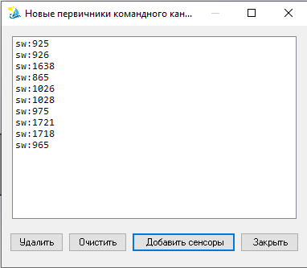

Буфер новых команд и фраз
Просмотр новых «первичников» — команд канала sw:… или фраз из сообщений — до принятия в рабочий справочник помощника. В повседневной работе окно нужно редко.
Как открыть
С панели «Агент» — действия буфера / «Сбор новых сенсоров» (подписи совпадают с интерфейсом панели). Канал команд связан с буфером sw:*; канал сообщений — с новыми фразами оператора.

Окно буфера командного канала: список новых первичников (здесь пуст) и кнопки Удалить, Очистить, Добавить сенсоры, Закрыть.
Зачем это нужно
Помощник не обязан сразу «знать» каждую новую команду SOLIDWORKS или формулировку. Новые элементы сначала попадают в буфер: оператор решает, перенести их в справочник или отбросить.
Элементы окна
| Элемент | Назначение |
|---|---|
| Список | Новые первичники из буферного файла текущего канала. Если пуст — добавлять нечего. |
| Удалить | Убрать выделенные записи из буфера без принятия в справочник. |
| Очистить | Очистить весь буфер текущего канала. |
| Добавить сенсоры | Перенести первичники из буфера в рабочий справочник помощника. |
| Закрыть | Закрыть окно. |
Параметры размера, записи и отправки буфера
sw:* — на вкладке «Адаптер» в настройках проекта. В режиме наблюдения обучение по буферу может не закрепляться — см. вкладку «Регуляция».